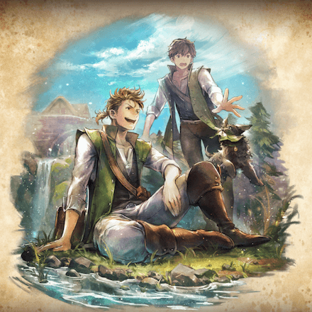
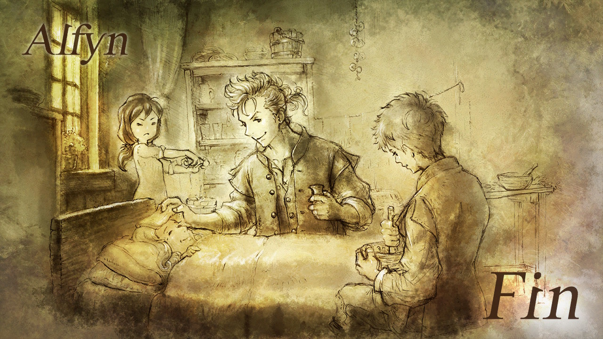

Back Story!
Once upon a time, in a far-off kingdom, there lived a brilliant strategist named Zeno.
he was renowned for his creative thinking and his ability to outsmart even the most cunning of opponents.
Zeno's skills were put to the test when a new turn-based game,
"The Battle for the Kingdom," was introduced to the kingdom's citizens. And enjoy the wonderful quest
to explore the startegic games and beat all bosses with you
4 wonderful teams that can attack, shield, speed up, and heal.
Be Creative and Smart!
The game took place within a virtual battlefield, immersing
players in a dynamic and strategic environment. Each participant was given
the opportunity to carefully plan their moves, considering the strengths and weaknesses
of their opponents. The game demanded a level of ingenuity, compelling players to explore
unconventional approaches and devise unique strategies in order to gain an advantage.
It was not merely a test of skill, but a mental challenge that encouraged outside-the-box thinking.

Spark a flame in Zeno!
Zeno was intrigued by the game and decided to give it a try.
he quickly rose through the ranks, defeating opponent after
opponent with his cunning strategies. he found that the game
challenged his creativity and pushed his to think outside the box.
Advanced to next level!
As he advanced to higher levels, Zeno encountered opponents
who were equally skilled in the game. he had to dig deep and use
his creative thinking to come up with new strategies to defeat them.
Zeno realized that the game was more than just a simple battle;
it was a test of wit and ingenuity.
Final Level!
Eventually, Zeno reached the final level of the game,
where he was pitted against the game's creator, a renowned
strategist himself. Zeno knew that this would be his toughest
challenge yet, but he was up for the task. he drew upon all his knowledge
and experience and came up with a plan that no one had ever seen before.
Intense battle!
The battle was intense, and both sides made clever moves,
but in the end, Zeno emerged victorious. he had proven herself
to be the most creative and strategic player in the kingdom.
Victory!
As a result of his success, Zeno became a legend in the kingdom,
and many young strategists sought his out for guidance.
he taught them the importance of creativity and strategy
in any endeavor and how to think outside the box to achieve their goals.
